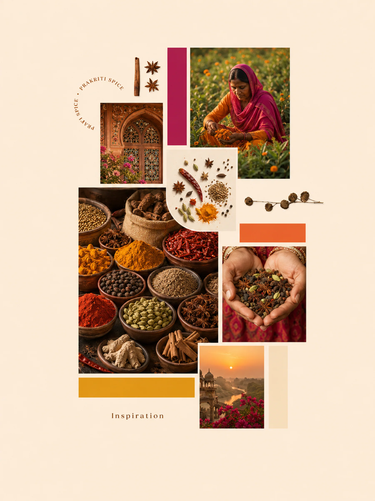
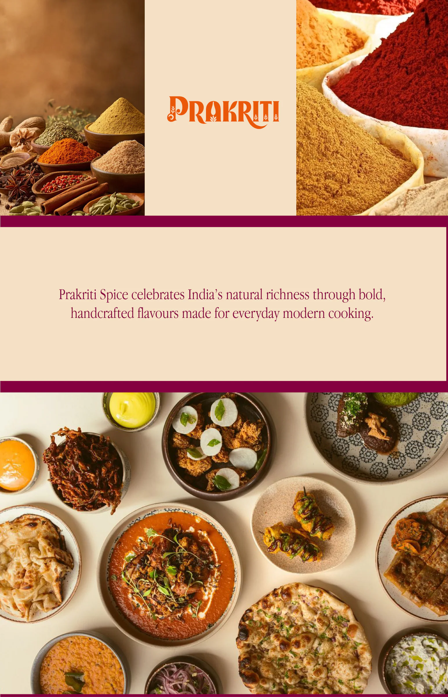
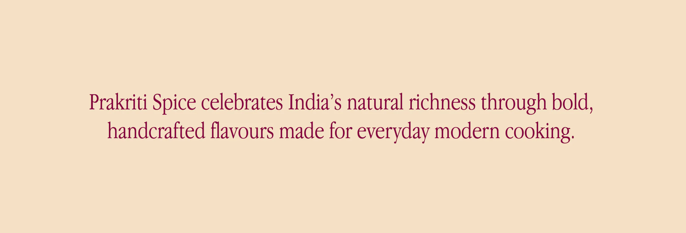
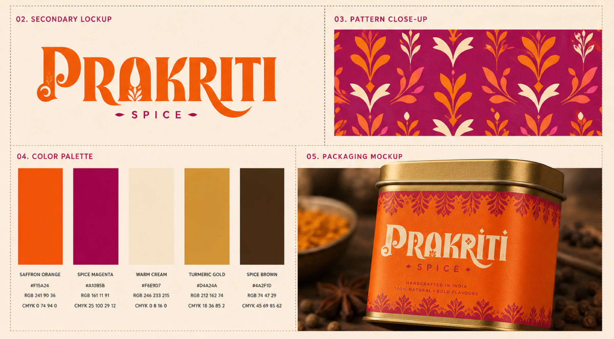
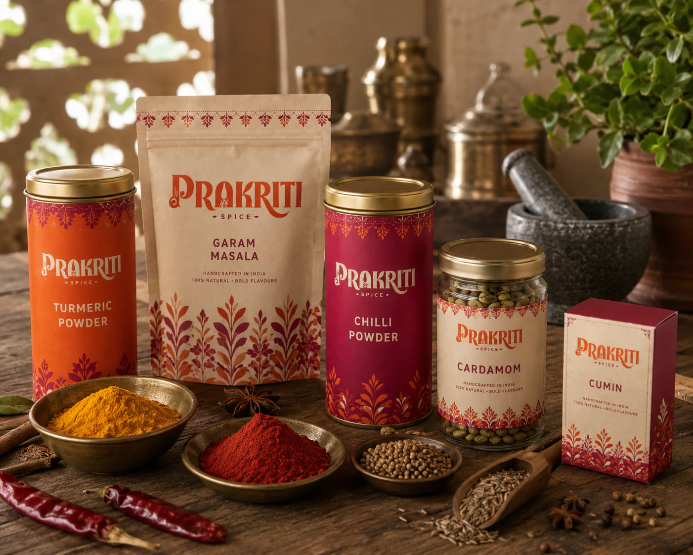

(project summary)
A brand and packaging system for Prakriti Spice, a small-batch masala house that grinds in India and wanted a shelf presence closer to a hand-block print than a factory label. The wordmark is a high-contrast display serif with sprouting leaf forms cut into the letters, locked over a letter-spaced SPICE and two seed marks.
Around it sits a block-print pattern of leaves and buds that runs as a border on tins and floods whole panels on pouches, and five colours pulled straight off the spice table — saffron orange, spice magenta, warm cream, turmeric gold and spice brown. Mark, pattern and one line of voice repeat on every surface, so tins, pouches, jars and cartons read as one family from across the aisle.
(project segments)
brand identity
packaging design
pattern & art direction
(niche)
spices — fmcg

the inspiration
Marigold fields, carved jaali windows and a market table of whole spices, collected before a single line was drawn.
moodboard


the system
Wordmark, block-print pattern and five colours lifted straight off the spice table.
brand guide
the range
Tins, pouches, jars and cartons, one family across five spices.
packaging